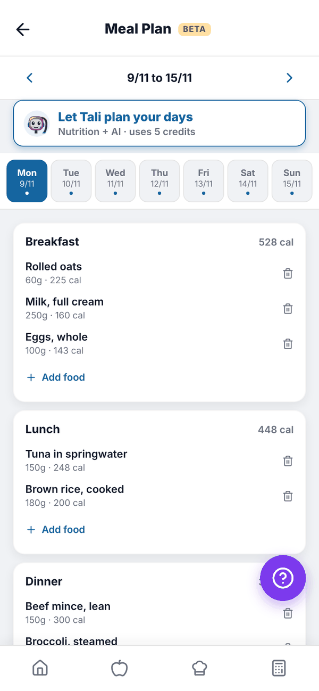
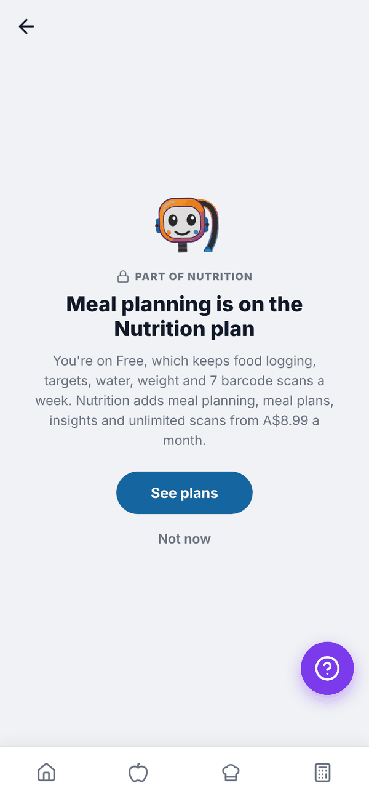
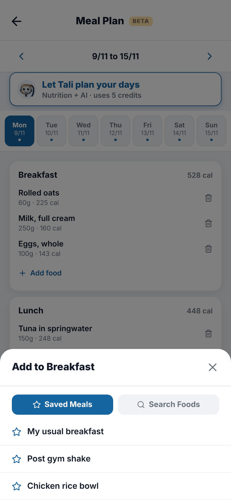
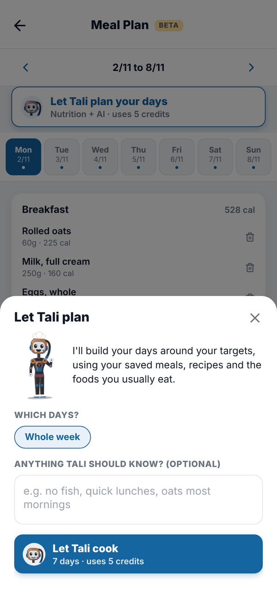

Totality Nutrition guide
Meal Plan
Plan your meals for the week, add saved meals or any food to each day, and let Tali build a plan around your targets.
The Meal Plan lets you plan a week of meals ahead. Anything you plan is also added to your food log for that day. Meal Plan is Trial and Paid. Let Tali plan your days also needs AI credits: Trial or Nutrition + AI Paid. On Free the tile shows a padlock and opens "Meal planning is on the Nutrition plan".


Find your way around#
- The arrows beside the dates move a week back or forward. Weeks run Monday to Sunday.
- The day tabs (Mon to Sun) pick a day. A dot means that day has food planned.
- Each day has Breakfast, Lunch, Dinner and Snack, with calories per meal.
The screen has a BETA tag while it's still being polished.
Add food to a day#
- Pick the day.
- Tap Add food under the meal.
- Choose Saved Meals to add a whole saved meal, or Search Foods to search for any food (type at least 2 characters).
- For a searched food, set the Serving size (g). "Your serving" shows the numbers. Tap Add to Breakfast (or whichever meal).

Foods added to your plan are also logged to your Food Log for that day, with a Planned · mark as eaten tag. They count in that day's totals straight away.
Remove a planned food#
Tap the bin next to it and confirm. It's also removed from your food log for that day.
Let Tali plan your days#
Tali can build the plan for you from your own saved meals, recipes and the foods you usually eat, balanced to your targets. It costs 5 credits.
- Tap Let Tali plan your days.
- Under Which days? choose Whole week, or From the day you've selected to the end of the week.
- Optionally, tell Tali anything in Anything Tali should know?, for example "no fish, quick lunches, oats most mornings".
- Tap Let Tali cook.
- Check each day's foods and totals against your targets. Tap Change to go back and adjust.
- Tap Add to my plan.

Every number in Tali's plan is worked out from your food data, not made up by the AI. You need targets set first. If Tali can't build a plan, your credits are given back.
Questions#
Why is the food from my plan already in my food log?
Planning adds it to your log for that day so your totals are ready. Tap Planned · mark as eaten once you've had it, or delete it if plans change.
Can I plan more than one week?
Yes. Use the arrows to move to next week and add to it.
What happens to my plan if I move to Free?
Food already planned stays in your food log. The Meal Plan screen itself is locked on Free.
Does Tali's plan replace food I've already planned?
No. It's added on top. Remove anything you don't want with the bin.